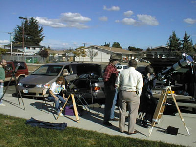

After a week of weather forecasts predicting cloudy or party cloudy skies for the Mercury transit, this morning dawned mostly clear here in San Jose, CA.
Articles written before the transit had predicted that it might be a difficult event to see, requiring high magnification, good optics, and steady seeing. We weren't sure what to expect.
Hoping to gain some elevation (for better seeing) and some distance eastward, away from the cold front the satellite photos showed coming our way, we headed for Henry Coe State Park, armed with a 4.5" Newtonian, a C-5, and an 80mm f/7 refractor, all fitted with JMB (Orion) solar filters.
Sunspot viewing before the start of the transit was fabulous, with one huge group (easily visible to the naked-filtered-eye) looking like an island arc, perhaps like Hawaii will look after another few million years drifting over its hot spot in the Pacific. The seeing was not very steady (not surprising for daytime on a day between two weather fronts) but was good enough to show a nice low-power view of the sunspots. We took the C-5 up to 85x and the 4.5" up to 60x to watch for the beginning of the transit.
First contact was predicted to be at 21:11:38 UT (1:11 local time); it was perhaps a minute earlier than that that we first thought we saw a small "bite" out of the sun's northeastern limb. The "bite" was very sharp and obvious, even in the 80f7, running at about 20x. Evidently the reports of the difficulty of observing a Mercury transit had been much exaggerated.
Second contact was expected at 21:23:08. We expected the "black drop" effect - that for a little while after second contact, the disk of Mercury would appear to stretch out a bit before appearing to be cleanly inside the sun's disk. What I saw was a bit different: from 21:21 to 21:23, the view seemed to oscillate (with the seeing fluctuations) between the "black drop" and actually showing some solar disk outside the disk of Mercury. This makes me suspect that the "black drop" effect is the result of seeing fluctuations, and might be less pronounced somewhere with very steady seeing.
Starting at 21:23, we could see clean separation between the outer edge of Mercury's silhouette and the
|  |
The 35 minutes or so between second and third contact were uneventful except for one stray cloud blocking our view for a few seconds, and a nice view in the 80mm of a jet airliner passing across the sun's disk just south of Mercury. At 21:56 (thinking it was 21:58, but we'd forgotten to synchronize our watches and it turned out we were both just over two minutes fast) we geared up for third contact (predicted for 21:58:47) ... and waited ... and waited ... and two minutes later, at 21:58:45, the "oscillating between black drop and showing separation" effect finally began to happen, and continued for a bit over half a minute (not as long as it had on second contact) before finally turning into "a bite out of the sun's limb". So the prediction very accurately described the third contact time, even though at the time we thought we had gotten a "free" two extra minutes of transit ...
I increased magnification on the C-5 to 170 to try to get as clear a view as possible of the last seconds before fourth contact. The "bite" finally became indisinguishable at 2:09:18 (a minute earlier than predicted, perhaps with steadier seeing we could have had a minute more of visibility). Again, though, neither magnification nor aperture seemed to matter; a few seconds before it disappeared in the 4.5" and 5", it was also still visible in the 80mm.
We didn't see any hint of Mercury silhouetted against the sun's corona with our white-light filters.